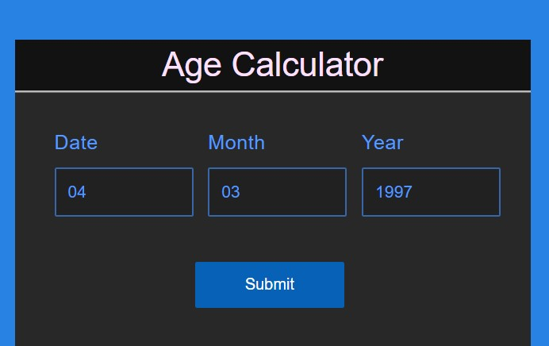

Denne aldersberegner bestemmer en persons alder baseret på deres fødselsdato. Metoder til aldersberegning kan variere på tværs af kulturer, men generelt øges en persons alder med 1 år på hver fødselsdag.
Denne gratis online aldersberegner er et værdifuldt og ligetil værktøj, der kan anvendes i talrige scenarier. Den kan bestemme en persons alder fra spædbarn til senior ved at beregne år, måneder og dage ved hjælp af deres fødselsdato og den aktuelle dato.
Hvad gør en aldersberegner?
Online aldersberegner er et webbaseret værktøj, designet til at beregne en persons alder på en bestemt dato, forudsat at deres fødselsdato (dob) er kendt. I mange vestlige kulturer afrundes aldersberegningen typisk nedad, så hvis en person har levet i 8 år og 9 måneder, betragtes deres alder som 8 år.
Fødselsdato (DOB) Beregner
Fødselsdato DOB-beregner gør det muligt for os at bestemme alder baseret på fødselsdatoen. For at bruge denne aldersberegner skal du indtaste de nødvendige værdier i den angivne indtastningsboks.
- DOB i form af DD/MM/YYYY
- Den specifikke dato, for hvilken du ønsker at beregne alderen, skal indtastes i samme format som dd/mm/yyyy

Sådan bruger du aldersberegneren?
For at bestemme en persons alder ved hjælp af en fødselsdagsberegner, følg disse trin:
- Trin 1: Gå til www.agecalculator.com
- Trin 2: Indtast fødselsdatoen i aldersberegnerens indtastningsboks ved hjælp af formatet DD/MM/YYYY.
- Trin 3: Tryk på "Send"-knappen for at beregne personens alder.
- Trin 4: Klik på "Nulstil"-knappen for at rydde indtastningsteksten og indtaste nye værdier.
Formel for aldersberegner
Ifølge Oxford Dictionary henviser "Alder" til varigheden af en persons liv eller eksistensen af et objekt. Beregning af alder indebærer sammenligning af en persons fødselsdato med datoen, hvor alderen kræves. Ved at trække fødselsdatoen fra den angivne dato får man personens alder, repræsenteret ved formlen: Alder = Givet dato - Fødselsdato. Her er trinnene til at beregne en persons alder fra deres fødselsdato til en angivet dato.
- Trin 1: Beregn først det samlede antal fulde år ved at trække fødselsåret fra det nuværende år. For eksempel, hvis det nuværende år er 2024, og fødselsåret er 1998, er antallet af fulde år 26.
- Trin 2: Bestem derefter antallet af fulde måneder ved at trække fødselsmåneden fra den aktuelle måned. Hvis den aktuelle måned er tidligere end fødselsmåneden, reduceres antallet af fulde år med 1, og der lægges 12 til den aktuelle måned for at justere. Derefter beregnes forskellen (den aktuelle måned - fødselsmåneden). For eksempel, hvis fødselsmåneden er februar, og den aktuelle måned er april, er det samlede månedstal 2. Hvis fødselsmåneden er november, og den aktuelle måned er april, er det samlede månedstal 4 + 12 = 16, og forskellen er 16 - 11 = 5.
- Trin 3: Tilsvarende som i det foregående trin bestemmes antallet af dage ved at trække fødselsdatoen fra den aktuelle dato. Hvis den aktuelle dato er tidligere end fødselsdatoen, trækkes 1 fra antallet af fulde måneder, og der lægges 30/31/28/29 til den aktuelle dato, afhængigt af antallet af dage i den foregående måned foran den aktuelle måned.
- Trin 4: Til sidst giver aldersberegneren alderen i dage, måneder og år.
Eksempler der viser, hvordan man beregner alder
Nedenfor er eksempler, der illustrerer, hvordan man beregner alder, og den metodologi, der anvendes af fødselsdagsberegneren, for en klarere forståelse.
Eksempel 1: Johns fødselsdato er den 25. juli 1985 (25/07/1985). Bestem hans alder den 28. januar 2021 og valider det ved hjælp af aldersberegneren.
Løsning:
Anvendelse af formlen til at beregne Johns alder:
En persons alder = Givet dato - Fødselsdato.
Johns fødselsdato = 25. juli 1985.
Givet dato = 28. januar 2021.
Bemærk, at den aktuelle måned er mindre end fødselsmåneden. Det vil sige, at januar (1) er mindre end juli (7). Derfor betragter vi år 2020 som det aktuelle år og tager også højde for 12 + 1 (januar) - 7 (juli) = 6 måneder.
Forskel i år = 2020 - 1985 = 35 år.
Antal tilbageværende dage = 3 dage.
Svar: Derfor er Johns alder 35 år, 6 måneder og 3 dage.
Eksempel 2: Peters fødselsdato er den 13. juli 1992. Beregn hans alder den 21. april 2016 og bekræft det ved hjælp af aldersberegneren.
Løsning:
Udnytter formlen til at beregne Peters alder:
En persons alder = Nutidig dato - Fødselsdato.
Her er en lidt anderledes tilgang til at forstå aldersformlen mere tydeligt.
Peters fødselsdato = 13. juli 1992.
Forskel i år = 2015 - 1992 = 23 år. (Denne beregning strækker sig fra den 13. juli 1992 til den 13. juli 2015).
Antal tilbageværende måneder fra den 13. juli 2015 til den 13. april 2016 = 9 måneder.
Antal tilbageværende dage fra den 13. april 2016 til den 21. april 2016 = 8 dage.
Svar: Derfor er Peters alder 23 år, 9 måneder og 8 dage.
På samme måde kan du benytte aldersberegneren til at fastslå alderen på personer med de angivne fødselsdatoer og aktuelle datoer, indtil den 26. august 2021:
- 13. juli 1992
- 21. april 2016
☛ Flere regnemaskiner:
Spørgsmål og svar om Aldersberegner
Hvordan Beregnes Alder på Aldersberegneren?
Du kan bruge denne online aldersberegner til at bestemme alder baseret på den angivne fødselsdato og den aktuelle eller ønskede dato for aldersberegning. Sørg for, at begge datoer er formateret som DD/MM/YYYY. Få adgang til fødselsdagsberegneren ved at besøge Aldersberegner.
Hvad er Brugen af Fødselsdagsberegneren?
Fødselsdagsberegneren beregner en persons eller objekts aktuelle alder med hensyntagen til år, måneder og dage. Indtast simpelthen fødselsdatoen og den aktuelle dato i dd/mm/yyyy-format for at få din alder.
Hvordan Bestemmes Antallet af År ved Brug af Fødselsdagsberegneren?
For at beregne antallet af år ved hjælp af aldersberegneren begynder du med at indtaste fødselsdatoen og den aktuelle dato i det angivne format. Beregneren giver alderen i år, måneder og dage, hvor "år" repræsenterer alderen eller antallet af år.
Hvordan Bruger Jeg Aldersberegneren?
For at lære mere kan du besøge vores artikel "Hvordan bruger jeg aldersberegneren?" eller du kan læse vores interessante blogindlæg. Top 10 berømte dyr og deres alder.